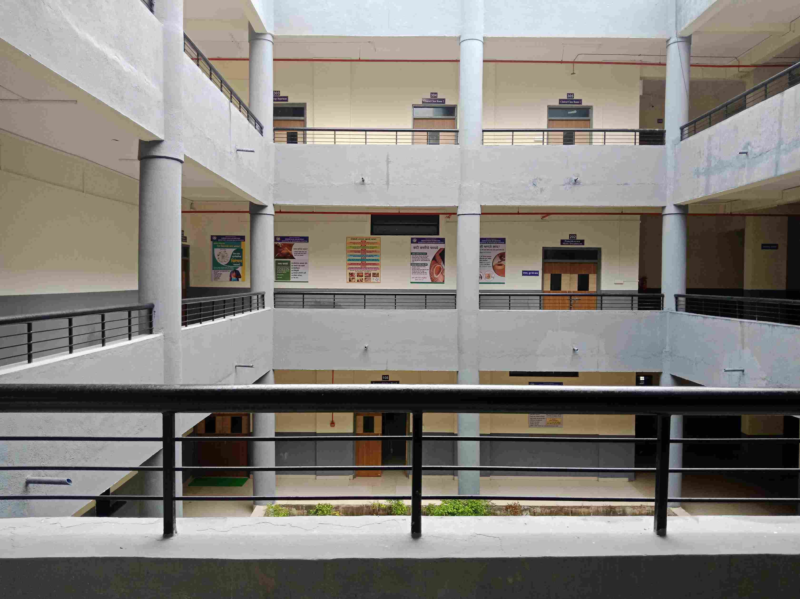

Hospital Infrastructure
Shreeyash Ayurvedic College and Hospital is successfully serving the Patients with Ayurved as well as Modern System of Medicine. Health Services to every person at very Low or No cost is our vision which gives opportunities to build up skilled Doctors serving to the Patients Best Hospital in Chhatrapati Sambhaji Nagar city with Ayurvedic , Allopathy, Dental treatment centers under one roof. 10 OPD, 100 Beds with Fully equipped Operation theater, and Advance Panchkarma & Physiotherapy Unit gives a strength to Health system . In-house X ray , ultrasound, Pathology Center meets the needs of patients at center. Hospital Setup established in area of 4578.06 Sq. Mtr..
